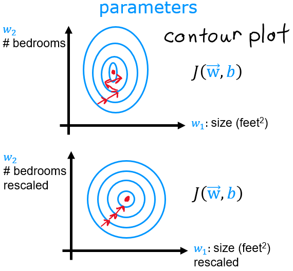

Hồi quy tuyến tính & hàm chi phí
Mô hình đơn giản nhất của machine learning: kẻ một đường thẳng đi “gần” các điểm dữ liệu nhất. Nhưng “gần” nghĩa là gì?
Bài toán: dự đoán giá nhà
Lab bắt đầu với hai căn nhà:
| Diện tích (1000 sqft) | Giá (1000s $) |
|---|---|
| 1.0 | 300 |
| 2.0 | 500 |
Ta muốn một hàm nhận diện tích và trả về giá, để dự đoán cho căn nhà 1200 sqft chưa có trong dữ liệu.
Mô hình
Hồi quy tuyến tính một biến (univariate linear regression) giả sử quan hệ là một đường thẳng:
Trong đó \(w\) là độ dốc (mỗi 1000 sqft thêm vào làm giá tăng bao nhiêu) và \(b\) là điểm cắt trục tung. Với hai điểm trên, giải tay ta được \(w = 200\), \(b = 100\), và dự đoán cho 1.2 là \(200 \cdot 1.2 + 100 = 340\) nghìn đô.
import numpy as np
x_train = np.array([1.0, 2.0])
y_train = np.array([300.0, 500.0])
m = x_train.shape[0] # số ví dụ: 2
def compute_model_output(x, w, b):
"""Tính f_wb = w*x + b cho từng ví dụ."""
m = x.shape[0]
f_wb = np.zeros(m)
for i in range(m):
f_wb[i] = w * x[i] + b
return f_wb
print(compute_model_output(x_train, w=200, b=100)) # [300. 500.]Vì \(f\) tuyến tính theo tham số \(w, b\). Đây là điểm quan trọng: ở chương 5, ta sẽ dùng các đặc trưng như \(x^2, x^3\) — mô hình khi đó vẽ ra đường cong, nhưng vẫn là “hồi quy tuyến tính” vì vẫn chỉ là tổng có trọng số của các đặc trưng.
Hàm chi phí (cost function)
Với dữ liệu thật có hàng trăm điểm, không đường thẳng nào đi qua tất cả. Ta cần một con số đo xem một bộ \((w, b)\) tệ đến mức nào. Lựa chọn kinh điển là sai số bình phương trung bình:
- \(f_{w,b}(x^{(i)}) - y^{(i)}\) là sai số (error, residual) của ví dụ \(i\).
- Bình phương để sai số âm và dương không triệt tiêu nhau, và để phạt nặng sai số lớn.
- Chia \(m\) để chi phí không phụ thuộc kích thước tập dữ liệu; chia thêm \(2\) chỉ để đạo hàm gọn hơn (số 2 từ bình phương sẽ triệt tiêu).
Mục tiêu học: tìm \(w, b\) sao cho \(J(w, b)\) nhỏ nhất.
Code từ bài Practice Lab
Trong bài thực hành C1_W2, dữ liệu là dân số thành phố (đơn vị 10.000 người) và lợi nhuận nhà hàng (đơn vị 10.000$). Đây là hàm mình viết:
def compute_cost(x, y, w, b):
m = x.shape[0]
cost_sum = 0
for i in range(m):
f_wb = w * x[i] + b # dự đoán
cost = (f_wb - y[i]) ** 2 # bình phương sai số
cost_sum = cost_sum + cost
total_cost = (1 / (2 * m)) * cost_sum
return total_costPhiên bản vector hoá (sẽ học ở chương 4) chỉ cần một dòng:
def compute_cost_vec(x, y, w, b):
return np.mean((w * x + b - y) ** 2) / 2Trực giác về hình dạng của J
Nếu cố định \(b = 100\) và chỉ thay đổi \(w\), \(J\) là một parabol theo \(w\): rất lớn khi \(w\) quá nhỏ hoặc quá lớn, nhỏ nhất ở \(w = 200\). Khi cho cả \(w\) và \(b\) cùng thay đổi, \(J\) trở thành một mặt cong hình bát (bowl) trong không gian 3 chiều. Vẽ đồng mức (contour) của mặt này ta được các hình elip lồng nhau; tâm elip là nghiệm tốt nhất.

Với hồi quy tuyến tính và sai số bình phương, \(J\) là hàm lồi (convex): chỉ có đúng một cực tiểu, không có “hố” cục bộ nào để mắc kẹt. Gradient descent (chương 3) chắc chắn đi tới nghiệm tốt nhất nếu \(\alpha\) đủ nhỏ.
Nếu giả sử nhiễu trong dữ liệu có phân phối chuẩn, \(y = wx + b + \varepsilon\) với \(\varepsilon \sim \mathcal N(0, \sigma^2)\), thì việc cực đại hoá likelihood (ước lượng hợp lý cực đại, MLE) tương đương đúng với cực tiểu hoá tổng bình phương sai số. Nói cách khác, MSE không phải lựa chọn tuỳ tiện — nó là hệ quả của giả định nhiễu Gauss.
Các lựa chọn khác:
- MAE \(\frac{1}{m}\sum |f - y|\): ít nhạy với ngoại lai (outlier) hơn, nhưng không khả vi tại 0.
- Huber loss: bình phương khi sai số nhỏ, tuyến tính khi sai số lớn — kết hợp ưu điểm của cả hai.
Thước đo hay báo cáo: RMSE \(=\sqrt{\text{MSE}}\) (cùng đơn vị với \(y\)) và \(R^2\) \(= 1 - \frac{\sum (y - \hat y)^2}{\sum (y - \bar y)^2}\) — tỉ lệ phương sai được mô hình giải thích (1 là hoàn hảo, 0 là không hơn việc đoán trung bình).
- C1_W1_Lab02 — Model Representation
- C1_W1_Lab03 — Cost Function (có đồ thị 3D tương tác của \(J\))
- C1_W2 Practice Lab — Linear Regression (bài graded:
compute_cost,compute_gradient)
Đi từng bước qua lab
Lab02 (Model Representation) và Lab03 (Cost Function) đi theo đúng mạch dưới đây:
- Nạp dữ liệu.
x_train = [1.0, 2.0](nghìn sqft),y_train = [300, 500](nghìn đô). Số ví dụm = x_train.shape[0] = 2. - Lấy một ví dụ.
x_i, y_i = x_train[i], y_train[i]chính là \((x^{(i)}, y^{(i)})\); vớii = 0ta được (1.0, 300). - Vẽ dữ liệu.
plt.scatter(x_train, y_train, marker='x', c='r')để nhìn hình dạng trước khi chọn mô hình. - Viết hàm mô hình.
compute_model_output(x, w, b)trả về \(wx + b\) cho từng ví dụ. - Dò tham số bằng tay. Thử
w = 100, b = 100: đường thẳng đi dưới các điểm. Tăng lênw = 200thì khớp đúng cả hai điểm. - Dự đoán. Nhà 1200 sqft: \(200 \times 1.2 + 100 = 340\) nghìn đô.
- Lab03: đo độ “tệ”. Viết
compute_costtheo công thức \(J\). Công cụplt_intuitiongiữ \(b = 100\) và cho kéo \(w\): chi phí nhỏ nhất đúng tại \(w = 200\). - Nhìn mặt chi phí 3D. Với dữ liệu lớn hơn, \(J(w,b)\) là một “cái bát”. Ghi chú Notion của mình có hàm
soup_bowlđể vẽ đường đồng mức (xem cuối chương).
Giả sử một môi giới có ba căn hộ cùng khu (số liệu minh hoạ):
| Diện tích (m²) | Giá (tỷ đồng) |
|---|---|
| 50 | 2.5 |
| 70 | 3.4 |
| 90 | 4.3 |
Ba điểm nằm đúng trên một đường thẳng với \(w = 0.045\) tỷ/m² (45 triệu mỗi m²) và \(b = 0.25\) tỷ, nên \(J = 0\). Căn 80 m² được định giá \(0.045 \times 80 + 0.25 = 3.85\) tỷ. Dữ liệu thật không bao giờ thẳng hàng như vậy, nên ta cần hàm chi phí để chọn đường “ít tệ nhất”, và cần thêm đặc trưng (tầng, hướng, tuổi nhà) ở chương 4.
x = np.array([50, 70, 90]); y = np.array([2.5, 3.4, 4.3])
w, b = 0.045, 0.25
print(compute_cost(x, y, w, b)) # 0.0
print(w * 80 + b) # 3.85Từ ghi chú Notion
Mục tiêu của hồi quy tuyến tính là cực tiểu \(J(w)\) (trường hợp đơn giản) hay \(J(w,b)\) (trường hợp tổng quát). Vì chi phí bình phương sai số nên mặt lỗi lồi như một cái bát súp, luôn có cực tiểu mà gradient đưa tới được. Đoạn code mình ghi lại để vẽ đường đồng mức với \(w\) và \(b\) đối xứng:
import numpy as np
import matplotlib.pyplot as plt
def compute_cost(x, y, w, b):
m = x.shape[0]
return (1 / (2 * m)) * np.sum((w * x + b - y) ** 2)
def soup_bowl(x_train, y_train):
fig, ax = plt.subplots()
w = np.linspace(-10, 10, 100)
b = np.linspace(-10, 10, 100)
W, B = np.meshgrid(w, b)
Z = np.zeros_like(W)
for i in range(W.shape[0]):
for j in range(W.shape[1]):
Z[i, j] = compute_cost(x_train, y_train, W[i, j], B[i, j])
ax.contour(W, B, Z, levels=np.logspace(-2, 3, 20))
ax.set_xlabel('w'); ax.set_ylabel('b')
ax.set_title('Cost Function Contour Plot')
plt.show()
soup_bowl(np.array([1, 2, 3, 4, 5]), np.array([1, 2, 3, 4, 5]))Nguồn Notion: Regression and Classification
Ghi nhớ
- Mô hình: \(f_{w,b}(x) = wx + b\).
- Chi phí: \(J = \frac{1}{2m}\sum (f - y)^2\) — đo mức “tệ” của một bộ tham số.
- Học = tìm \(w, b\) cực tiểu hoá \(J\). Với hồi quy tuyến tính, \(J\) lồi nên chỉ có một cực tiểu.
Tự kiểm tra
Nếu mọi dự đoán đều đúng hoàn toàn, J bằng bao nhiêu?
\(J = 0\). Chi phí luôn \(\ge 0\) vì là tổng các bình phương.
Với x = [1, 2], y = [300, 500], tính J(w=200, b=0).
Dự đoán [200, 400], sai số [−100, −100]. \(J = \frac{1}{2\cdot 2}(10000 + 10000) = 5000\).
Nếu nhân đôi số ví dụ bằng cách lặp lại toàn bộ dữ liệu, J thay đổi thế nào?
Không đổi — đó là lý do chia cho \(m\): chi phí là trung bình chứ không phải tổng.